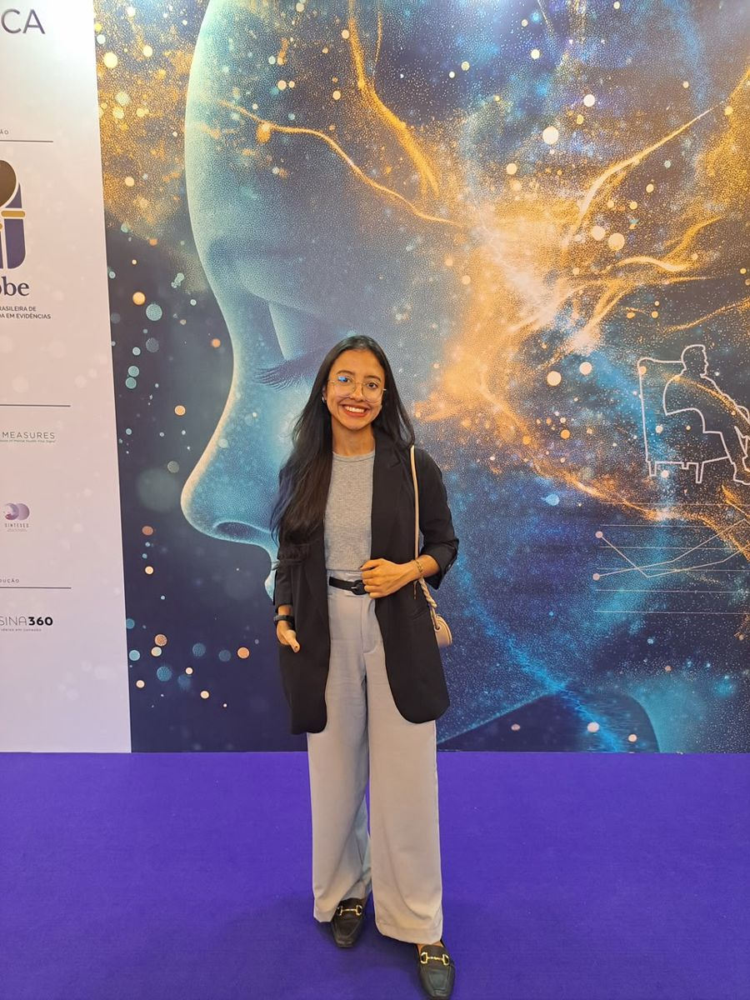

Método e acolhimento
Quem sou
Sou psicóloga clínica, bacharel em Psicologia pela UDF e pós-graduada em Psicologia Baseada em Evidências na Prática Clínica pelo InPBE. Atendo desde 2022 e ofereço um espaço seguro e livre de julgamentos para você entender o que sente.
Como trabalho
Trabalho a partir da Terapia Cognitivo-Comportamental (TCC) e da Prática Baseada em Evidências (PBE), para você sair das sessões com ferramentas práticas e levar o que trabalhamos para o seu dia a dia.
No Instagram
Compartilho conteúdos de psicologia de forma leve no @psigenna, para ajudar a quebrar o estigma sobre cuidar da saúde mental.

O que tratamos
- Ansiedade Preocupação que não desliga, tensão no corpo, medo do que pode acontecer.
- Depressão Tristeza que se arrasta, falta de energia, perda do interesse pelas coisas.
- Autocrítica Uma voz interna dura, que cobra perfeição, compara você com os outros e não deixa reconhecer as próprias conquistas. Na terapia, você aprende a questionar esses pensamentos e a se tratar com mais justiça.
- Procrastinação Adiar o que importa mesmo sabendo do prejuízo, e depois se culpar por isso. Vamos entender o que está por trás do adiamento e montar estratégias práticas para começar e manter as tarefas.
- Sobrecarga Estresse constante, cansaço que não passa e a sensação de dar conta de tudo, menos de si. Aprender a reconhecer os sinais de alerta, organizar prioridades e colocar limites antes de se esgotar.
Quem já passou por aqui
Dúvidas frequentes
O que costuma aparecer antes de começar a terapia.
Como é a primeira sessão?
É uma conversa de 50 minutos pelo Google Meet para entender o que te trouxe, um pouco da sua história e o que você espera da terapia. Também é a hora de tirar dúvidas sobre como vamos trabalhar juntos.
Como funciona o atendimento online?
Todos os atendimentos são online, pelo Google Meet, e cada sessão dura 50 minutos, com o mesmo sigilo de uma sessão presencial. Você só precisa de internet, um fone de ouvido e um lugar reservado, onde se sinta à vontade para falar.
Terapia online funciona tão bem quanto a presencial?
Para muitas demandas, como ansiedade e depressão, as pesquisas mostram resultados parecidos entre a TCC online e a presencial. E você ainda ganha tempo: sem deslocamento, a sessão cabe melhor na rotina, inclusive à noite.
Por quanto tempo vou precisar fazer terapia?
Depende do que você traz e dos seus objetivos. Na TCC, combinamos metas logo no início e revemos juntos, ao longo das sessões, o quanto você já avançou.
Você atende por convênio?
O atendimento é particular: não atendo por convênio. Mas emito nota fiscal de cada sessão, para você pedir reembolso ao seu plano de saúde, se ele oferecer essa opção. Valores e formas de pagamento eu passo pelo WhatsApp.
O que eu contar fica em sigilo?
Sim. O sigilo profissional é um dever do psicólogo, previsto no Código de Ética da profissão (art. 9º), e protege tudo o que é falado nas sessões.